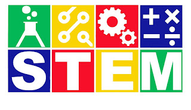

Виртуальные лаборатории – это интерактивные онлайн-платформы или программные средства, позволяющие проводить эксперименты и моделировать различные процессы в цифровой среде. Они имитируют реальное оборудование и условия, позволяя пользователям исследовать научные явления и проводить эксперименты без физического присутствия в лаборатории. Виртуальные лаборатории широко применяются в учебных целях, особенно в естественных науках, таких как физика, химия и биология.

Связь виртуальных лабораторий со STEM-технологиями
STEM (Science, Technology, Engineering, Mathematics) – наука, технологии, инженерия и математика. Виртуальные лаборатории способствуют обучению через интеграцию научных знаний и технологий в рамках STEM-подхода.
Наука (S)
Виртуальные лаборатории помогают ученикам лучше понять фундаментальные научные концепции через моделирование экспериментов.
Технологии (T)
Использование цифровых платформ и программного обеспечения для проведения экспериментов является неотъемлемой частью виртуальных лабораторий.
Инженерия (E)
Виртуальные лаборатории могут использоваться для разработки и тестирования инженерных решений и устройств.
Математика (M)
Эксперименты, проводимые в виртуальных лабораториях, могут включать моделирование данных, расчет результатов и анализ, что требует математической обработки.